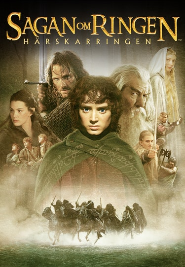
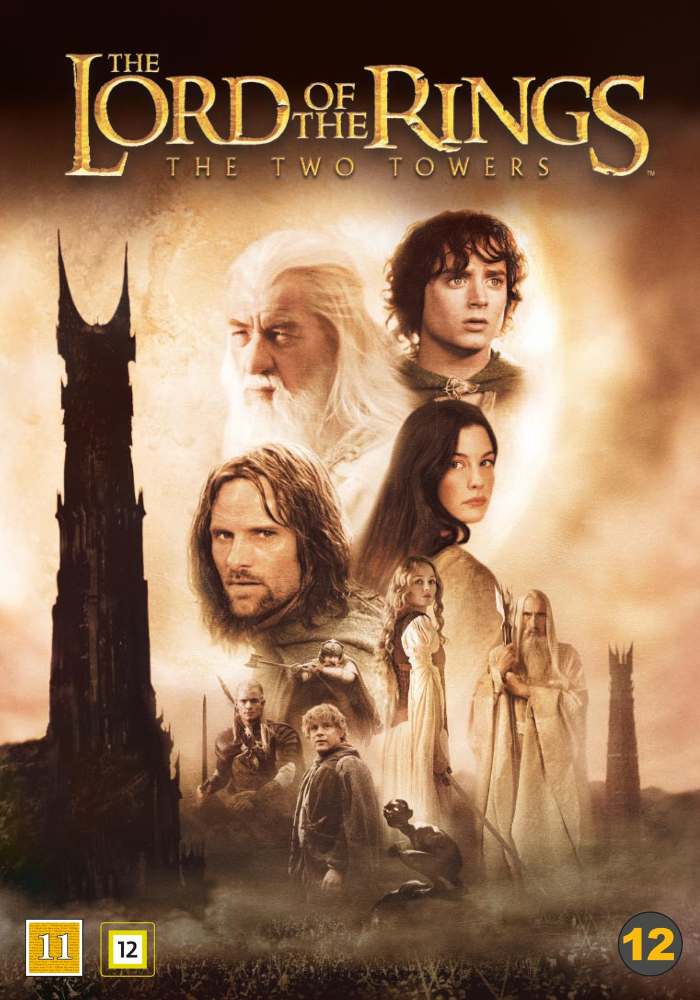

Sagan om ringen filmerna!
Sagan om ringen: Härskarringen
En ring att sämja dem. En ring att främja dem. En ring att djupt i mörkrets vida riken tämja dem. Ett litet utvalt sällskap om nio med hoben Frodo i spetsen ger sig iväg på det ödesdigra uppdraget att förstöra Härskarringen i Domedagsklyftan. I strid med Sauron och de onda makterna
Två Tornen
Brödraskapet har splittrats, men målet att tillintetgöra Härskarringen är ännu ej fullbordat. Frodo och Sam lägger sina liv i Gollums händer för att finna vägen till Mordor. Medan Sarumans armé närmar sig, måste de överlevande i brödraskapet tillsammans med människor och varelser från Midgård, förbereda sig för strid. Kriget om ringen har börjat
Konungens återkomst

Brödraskapets resa närmar sig slutet. Saurons styrkor har anfallit Gondors huvudstad Minas Tirith i det sista slaget mot mänskligheten. Med enbart en rikshovmästare som ledare har det en gång så stolta kungariket aldrig varit i större behov av sin konung. Men kommer Aragorn att finna den inre styrka som han behöver för att acceptera den roll ödet bestämt att han ska spela, kommer han att kunna axla rollen han fötts till?